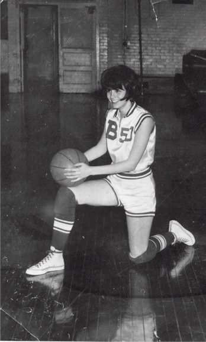
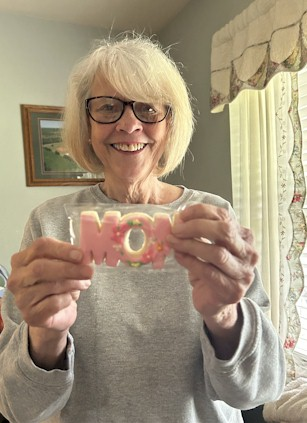
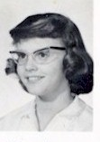
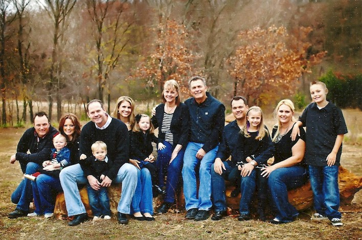
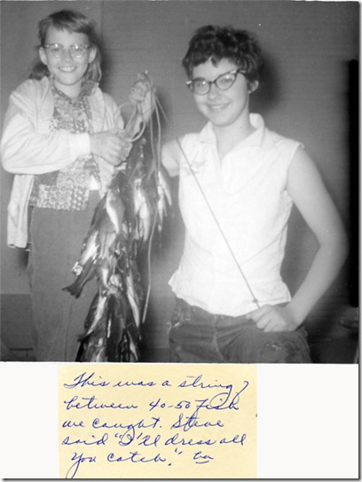
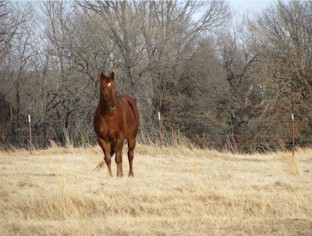
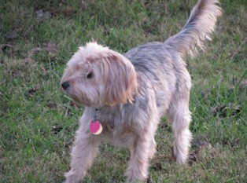
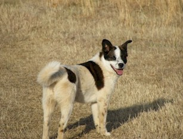
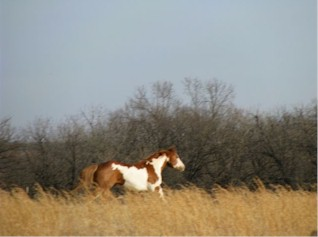
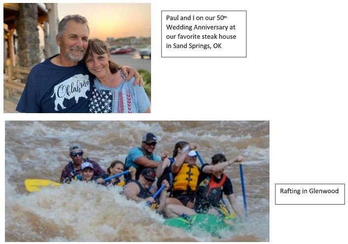

| 1967 Click for Franklin Elementary Photo |
 1967 |
|
|  2026 |
 1961 |
1965 |
|  Thanksgiving 2011 - From left to right, this is who they are and where they live: Our youngest son, Ryan, Erin, and Isabelle (Issie) Weir - Arvada, CO; Joe, Boone, Our daughter, Lori and Alia DeBerry - Sand Springs, OK; Paul and I, Our oldest son, Paul-4, Katie, Xenia and Paul-5 - Chandler, AZ |
 Fishing |
|
|  Peppy |
 Scooter |
|
|  Mollie |
 Gizmo |
|
|  2022 |